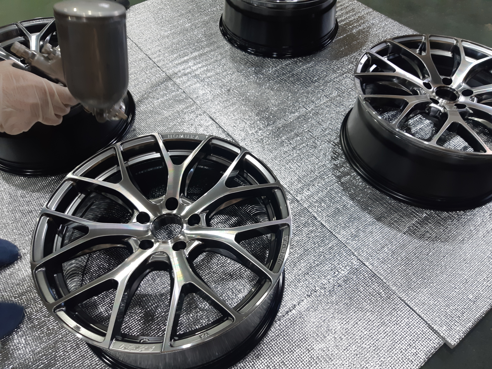

ホイールコーティング
足元まで、愛車らしく。
ホイールの状態や形状を確認し、施工できる範囲をご案内します。見えやすい表面だけでなく、どこまで施工するかもお車に合わせて相談できます。
HOW WE WORK
細部まで見て、施工方法を決める。
車に装着したホイールと、取り外したホイールの作業写真を掲載しています。形状や状態によって、施工範囲を相談します。
- 01
ホイールの状態を確認
形状や汚れの状態、気になる部分を確認します。
- 02
施工範囲を決める
装着状態での作業か、単体での作業かも含めてご案内します。
- 03
作業とお手入れ
施工中の写真とあわせて、その後の洗い方もご相談いただけます。
IN THE WORKSHOP
施工写真を見る
写真を押すと大きく表示できます。


写真は実際の作業例です。施工範囲は個別に確認します。
ほかの施工を見る
YOUR FIRST CONVERSATION
この施工、自分の車にも合う？
車種や気になること、普段の乗り方からお聞かせください。施工名が分からなくてもご相談いただけます。